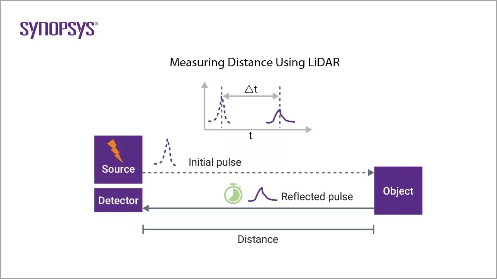
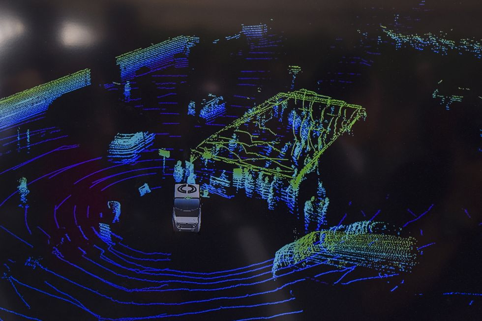

Investigating the the use of LiDAR sensors impact the safety, performance, and reliability of autonomous vehicle systems compared to relying solely on cameras and radar
May 17, 2024
With autonomous vehicles predicted to be the future, it is important to analyse the implications of such technologies
Abstract
Light Detection and Ranging (LiDAR) technology has emerged as a critical sensoral component in the production of autonomous vehicle perception and navigation systems. LiDAR works by utilizing pulses of electromagnetic waves to gather vital data on the distance from the sensoral component and nearby objects. This research aims to comprehensively evaluate the implications of LiDAR technology for autonomous 4-wheeler driving. By analyzing the technical capabilities and limitations of various LiDAR systems through conducting an effective meta-analysis, this study analyses the potential implications of this technology and autonomous vehicles in general. Additionally, the computational demands, software algorithms, and infrastructure requirements for processing large LiDAR datasets in real-time are investigated. This work also examines the safety implications of LiDAR and Autonomous Vehicles, including potential failures, sensor redundancy needs, and verification and validation processes. The long-term scalability and cost factors that may impact mainstream LiDAR adoption are also taken into account. Overall, this multifaceted research aims to provide a comprehensive perspective on the current state and future prospects of LiDAR technology for enabling safe and reliable autonomous driving capabilities.
Introduction
Autonomous Vehicles(which is frequently refered to as "AV" or "AVs" further throughout in this article) have been subject to multi-faceted research fronts, with a sharp rise in the intensity of research on the topic in recent years. AVs promise to revolutionize personalized transport through safer, cleaner, more convenient mode of transportation. However, a essential component of AVs needs to be created and tested in real-world scenarios before production, which is the distance sensor system. This is crucial in AVs as they allow the computer to gauge the distance from surrounding traffic, pedestrians, and understand lane zoning of roads, etc. A potential solution, which will be covered in this article, is LiDAR, also known as Light Detection and ranging. LiDAR uses electromagnetic waves to guage distances with exceptional accuracy and in multiple weather conditions.
However, LiDAR is not the only solution to this problem. Some of these are:
Advanced Camera Systems. These systems use cameras and computer vision algorithms for object recognition. However, these suffer in poor lighting conditions.
Radar. Radar is a similar system that gives the direction of movement and location of a object. However, it does provide as much accuracy as LiDAR.
Hybrid. Hybrid systems use a mix of LiDAR, Cameras, and Radar to create a more accurate picture and provide more details basing of the use cases of each. However, such systems would prove to be quite expensive.
Connection to SOI
LiDAR Based Autonomous vehicles are connected to the statement of inquiry "Wave theory demonstrates the interaction of energy with the environment through modelling a law of the natural world", as LiDAR works on the principles of wave-theory. LiDAR based Autonomous Vehicles use wave theory, as it utilizes the reflection of light waves to measure distance of an object from the sensor.
Solution
LiDAR(short for Light Detection and Ranging) is a remote sensing method that utilizes electromagnetic pulses to calculate the ranges(variable distance from the device). Usually, this is paired with other data to create a accurate 3D model of the environment. A LiDAR module consists of 3 components
Laser
Scanner
GPS Module
There are several variants of Lidar, the two most popular being Topographic and Bathymetric.Topographic LiDAR consists of light with wavelengths near the infrared spectrum, while Bathymetric uses green light, which has the property to penetrate water columns.
How does LiDAR work?

LiDAR works by firing a pulse of light outward and timing the time taken for the light wave to be reflected back to the sensor. From this, we can find out the distance of objects from the sensor by using the formula v = d/t (as we know the velocity of the wave and the time taken, we can calculate distance from the re-arrangement d = vt). By doing this 100,000s per second, points can be placed on a 3D map with respect to the sensor.
The integration to Autonomous Personal Vehicles

On Autonomous vehicles, a LiDAR system(LiDAR laser, receiver, and GPS module) is placed on the car(usually on the top) to provide a 360o view of the surroundings. The LiDAR module fires 100,000s of laser bursts per second. Figure 1.2 shows how this data looks in 3D space through the rendering of these points. This allows the car create a digital, mathematical environment in which algorithms can be written to find obstacles.
Effectiveness
LiDAR is an effective sensor with almost no limitations other than its cost. However, LiDAR cannot work in heavy rain as the water droplets results in large diffraction of light, which makes it harder for the system to trace back the light point to the reflected object. Furthermore, the computational requirements needed for the processing of the data is quite immense. However, overall, LiDAR is an effective technology that works well.
Implications
Social
Positive
LiDAR based Autonomous Vehicles improve safety of commuters on the roads, which is done by the level of attentiveness and accuracy a computerized system is expected to have. With this system, crashes will become less frequent, as studies state that crashes would decrease from a lower estimate of 33% up to 90%. Taking into account that 1.35 million people died worldwide in 2016 from motor vehicular incidents, AVs would save a significant portion of people.
Accessibility will also be increased, with elderly, physically or mentally challenged persons, or any other people that are unable to get qualification for driving will be able to use the roads safely to commute. This can connect them to services and family members that live further away and require commute by vehicle1.
Negative
However, Autonomous Vehicles have the potential to cause damage to the lives of the populace as well. For instance, they remove jobs from a significant portion of the population(which are automobile drivers). In the US, 2.9% of the population is engaged in these jobs, amounting to more than 4 million in total. As a result, the widespread introduction of AVs would result in mass job displacement in the sector, resulting in a surge in unemployment rates.
Economic
Positive
LiDAR based autonomous vehicles decrease travel time significantly, as autonomous vehicles use smarter computer-based algorithms to manage traffic, while also following all rules set to minimize traffic at hotspots such as junctions. This is a prominent issue, as a study shows that Americans spend an average of 97 hours a year or 2.5 work weeks per year in traffic congestion. By reducing travel times, employees at companies will be more productive by a factor of effectively adding 2.5 week’s worth of work per year on existing employee performance. This is show through data as well, as the cost of these congestions amounted to around $87 billion in 2018(as calculated by Forbes).
In the future, a fully autonomous truck fleet an posses significant economic benefits. This is caused by the fact that autonomous vehicles can decrease human labour, making it cheaper for employers while also not requiring mandatory breaks required for human truckers. AVs can also optimize routes to better save fuel, decreasing the cost per mile of cargo transport. To back this up with data, in a study researchers estimate that the Swedish Logistics sector can benefit with upto $1,215,292,000 USD in savings between 2020 and 2030 through the use of AVs.
Negatives
However, Autonomous Vehicles have the potential to economic damage as well. For instance, they remove jobs from a significant portion of the population(which are automobile drivers). In the US, 2.9% of the population is engaged in these jobs, amounting to more than 4 million in total. They earn a salary of approximately $45,000 dollars a year, resulting in a total of $180 billion per year in lost income. This can lead to significant cuts in spending of these now unemployed workers, resulting in hits to several different industries in terms of profit. Furthermore, AVs also reduce the number of crashes that occur significantly, which results in a large impact on the automobile repair industry. The automobile repair industry in the US accounts for over $71 billion dollars in revenue. As AVs are expected to reduce the crash rates by between 33-90%, this can lead to losses in multi-billion dollar figures to the sector.
LiDAR is also quite expensive, with a system needed for autonomous vehicles costing tens of thousands of dollars. For example, Velodyne-64’s LiDAR system costs around $80,000 USD, making it as expensive as a lot of Luxury cars. This logically drives the cost of AVs higher, significantly decreasing the potential market and cost of produces2.
Ethical
Autonomous Vehicles also have ethical implications in several scenarios on the road. For instance, the AV may be hurtling towards a child and its too late to stop. However, there is traffic on the other lane. So, the scenario is for the computer to choose whether to kill the child or risk getting the owner getting injured in traffic. Such ethical dilemmas pose significant challenges to computerized vehicles and need to be regulated to ensure safety on roads.
Conclusion
In conclusion, LiDAR proves itself a important part of any future autonomous vehicles, as it provides sensoral data on the distance of objects from the sensor. However there are some implications regarding Social, Ethical, and Economic factors.
LiDAR is expensive and computationally heavy, but I believe that it will prove itself to be crucial to any future production autonomous vehicles due to its accuracy, distance, and weather-resistance. Furthermore, work is being done on LiDAR sensors to decrease the cost of LiDAR to between 500-1000 USD. Combining all of this, I think that LiDAR based Autonomous Vehicles is the future of transport.
It is also important to note that this may increase miles travels by upto 14%, which may result in more congestion on the roads
However, it is important to note that there is work being done to decrease the cost of LiDAR sensors to 500-1000 USD